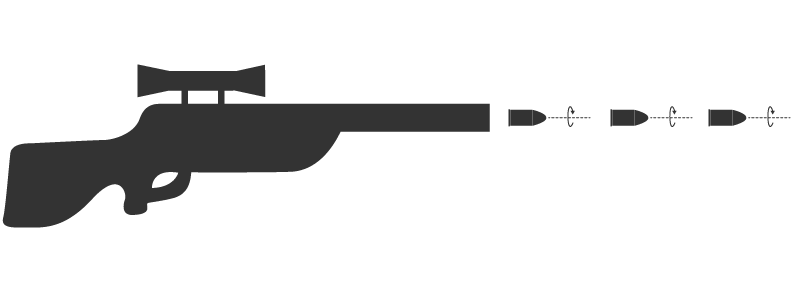
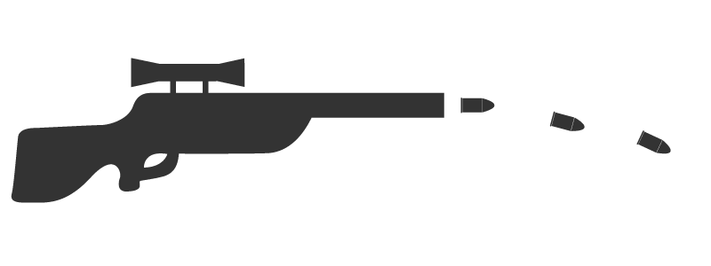
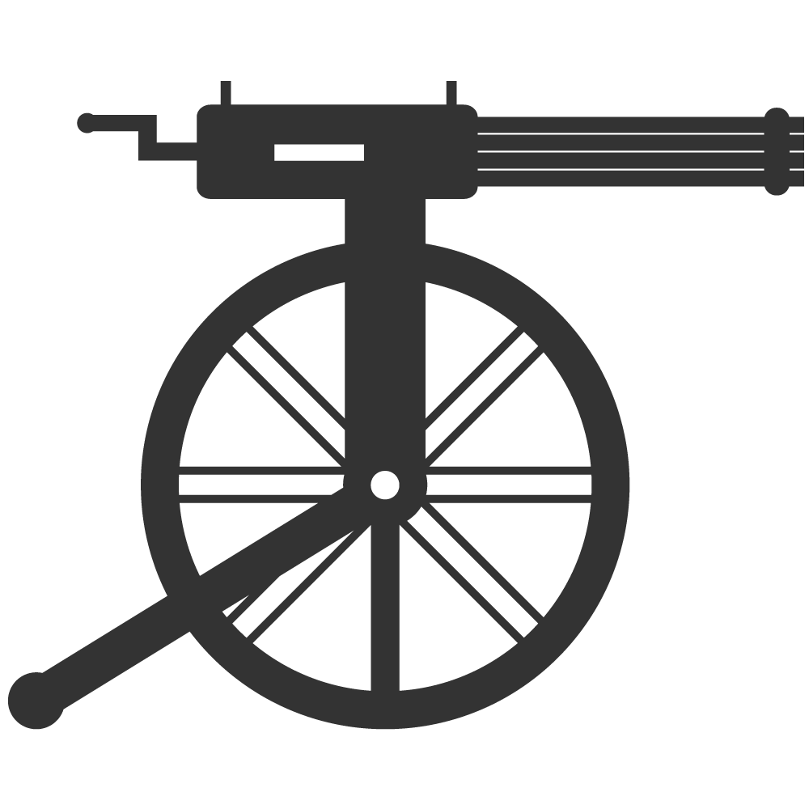

Guns
Guns. They are fascinating right? Over 75 people per 100 have a gun in America. That means more then 270 million civilians have a fire arm. Each year they have approximately 31.000 gun incidents where many people have been attacked by some kind of pistol. In the world of today, having a gun is nothing special. It is even normal. But where do guns come from? What are their roots?
History
That's why I want to go back in time. Let's find out how they invented guns and how they became so powerful. Let's go back and see who made the bullet blazing machine. At each date I show some of the major breakthroughs that perfected the gun. It is a brief summary of what happened in that century. So go ahead and click a date above or click on the arrows on the bottom. Enjoy your journey!
Firework
It all started with the Chinese. They were the first to invent gunpowder which is used to fire a gun. However, they didn't start out with a gun we see today. They started out with a simple barrel of bamboo which was used for fireworks. This was long before 1300 but it was not popular untill this age. Unfortunately the bamboo was not strong enough and so they had to make a metal barrel together with projectiles that fit perfectly. And without knowing, they made a gun. All it takes is gunpowder, a barrel and a projectile.
Launch the firework!


Fuse
In the beginning, guns were fired with a fuse. The spark was transferred untill it reached the gunpowder and then boom. Or they held a torch near the gunpowder and it exploded just like that. But still, it was not very effective if you were staring your enemy in the eye. You always had to have one hand free. So that's where the matchlock mechanism came in. The design removed the need of one hand in order to fire the gun. It basically just put a fuse on your gun.
Defuse the bomb!
This bomb is going to blow in twenty seconds. Quickly push the defuse button in order to stop it from devastating my website!

Bullets
During the 1500s they realised round bullets were a little bit unhandy to load in to their gun. They had to put gunpowder in the barrel, then put the bullet in, and then push it all together. This was very time consuming if you were fighting a war. That's why they invented the paper cartridge. It is a type of ammunition packaging a bullet together with the gunpowder. They also invented rifling, which are grooves in the barrel to make the projectile spin and make it more accurate.
Rifling
The bullet spins because of the grooves in the barrel.
No Rifling
The bullet falls down because it is not spinning.

Sights
Thanks to the rifling technique guns are way more accurate then before. But another technique that also improved accuracy was the use of sights. An elevation on the far end of the barrel aligned by eye with a notch at the base of the barrel made the sight complete. When everyhting was aligned this system provided all the accuracy required for a good shot. In this age they also invented the flintlock. It was a new system simular to the matchlock but way better.
In the 1600s they only had simple iron sights. But today there are a lot of different sights and each one has its own purpose. Let's take a look at a few.
iron sights
red dot sights
telescopic sights
Duelling
In the 1600s the French invented the bayonet but only in the 1700s it was used by other countries. It was a simple long blade and they put it on the guns end. Next to that, the duelling pistols became very popular. They were so favoured that they replaced the carrying of a sword or a knife. This happened around 1750. A few years later they became officially standarized weapons. It was a rule that they should be nine or ten inch long with the flintlock system carrying a ball of 48 pound.
Duel of death
This is the moment of truth! Shoot the target before it kills you! Hurry up!
Guns
The breechloading concept developed in the late 1800s led to a very important advantage. Speed of loading. Next to that, they also thought of multiple chambers for multiple shots. They also invented the slide technique, the so called repeating rifle. Around that same time they also wanted to make a gun that fires rounds quickly so they came up with the gatling gun. A gun with several barrels that turned and fired when a man turned its crank while his partner fed the gun with ammunition.
Shoot faster
Each time you click turn, it will fire a round. If you want to shoot faster, you will have to click faster!
Advanced weaponry
A lot happened during the 1900s. Several wars and battles were fought throughout the century. Therefor they had the need for better and more advanced weapons. Thus they invented the first automatic rifle in the early 1900s. It fired continuously when the trigger was held back. They also came to the idea of sub machine guns and assault rifles. Sub machine for in close combat, assault rifles for longer range but also for close combat if necessary. Next to that, grenades, flamethrowers and mortars became introduced as well.
Combat vehicles
During WW1, armourd vehicles were first deployed. There was one problem though, they required smooth terrain to move upon and thus new developments were needed: the tank, the same as an armoured car but it could move across all terrain. Although the tank was not very effective in WW1, the tank became very important in WW2. During WW1 it was also the first time that aircrafts were used on a large scale. In the beginning they were mostly used reconnaissance but after a while pilots also learned how to shoot and drop bombs.
Robots
Starting in 1900, weaponry got very advanced very quickly. Tanks, fighter jets, grenades, snipers, flashbangs, ... But also on larger scale like missiles and nuclear bombs. 1900 was a century full of surprises and even today new technologies are made. Super high-tech sights, corner guns that can shoot around a corner, ... Technology keeps growing and we don't know what will come next. We don't know what the future will bring. Drones already exist, it's only a matter of time that soldiers will be robots too.
Bombs away
Do you want to drop a bomb at this location? Go ahead!